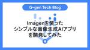

G-gen Tech Blog
https://blog.g-gen.co.jp/
Google Cloud(旧称GCP)の情報発信を行う技術ブログ
フィード
2024年6月のイチオシGoogle Cloudアップデート
G-gen Tech Blog
G-gen の杉村です。2024年6月のイチオシ Google Cloud アップデートをまとめてご紹介します。記載は全て、記事公開当時のものですのでご留意ください。 はじめに BigQuery の Slot Recommender が Preview => GA Cloud SQLでメンテナンスの最大5週間前に通知を受け取れるように Gemini in Colab Enterprise が Preview 公開 Vertex AI Studio が Google アカウントなしで試用できるように Google Cloud で Oracle がサポート Compute Engine で C4 …
1日前
生成AIを使ってLookerダッシュボードを説明させてみた（Looker Dashboard Summarization） 2
2
G-gen Tech Blog
G-gen の奥田梨紗です。オープンソースの Looker 拡張機能である Looker Dashboard Summarization を使い、Looker のダッシュボードを生成 AI が自然言語で説明する機能を実装しました。本記事ではその機能の紹介や、実装手順について紹介します。 はじめに 前提知識 Looker とは Looker 拡張機能と拡張フレームワークとは Gemini とは Looker Dashboard Summarization できること 料金 1. グラフの説明 2. 数値の特徴を説明 3. 次のアクションの提案 デモンストレーション動画 実装 構成 実装の手順 実…
5日前

Imagenを使ったシンプルな画像生成AIアプリを開発してみた
G-gen Tech Blog
G-gen の大津です。当記事では、Google が提供する画像生成 AI モデル Imagen と、Web UI 用の Python フレームワークである Gradio を使用した、シンプルな画像生成 Web アプリの開発手順を紹介します。 はじめに Imagen Gradio 当記事で開発するもの ソースコードの開発 Python のバージョン requirements.txt main.py 動作確認 ローカルでの実行 画像生成 Web アプリを使用した画像生成 Google Cloud へのデプロイ Cloud Run の使用 ディレクトリ構成 コードの修正 Dockerfile の作…
8日前
Google Workspace で問い合わせ対応システムを作成する方法 #4 (Google App Script 設定)
G-gen Tech Blog
G-gen の荒井です。当記事では Google Workspace のアプリケーションのみ使用してお問い合わせシステムを作成する方法をご紹介します。 はじめに ご紹介すること 記事の構成 設定作業概要 GAS 設定 GAS コード解説 GAS トリガー設定 テスト 設定1 : GAS 設定 設定2 : GAS コード解説 関数名 変数の定義 自動送信メールのオプション設定 自動送信メールの件名設定 自動送信メールの本文設定 メールの定義 プロジェクトの保存 設定3 : GAS トリガー設定 設定4 : テスト 次の記事 はじめに ご紹介すること 当記事では問い合わせ対応システムで使用する G…
12日前

Cloud Runのドメインマッピング機能で設定したカスタムドメインが削除できない
G-gen Tech Blog
G-gen の佐々木です。当記事では、Cloud Run のドメインマッピング機能で設定したカスタムドメインが削除できない事象について、解決方法を解説します。 前提知識 事象の詳細 解決方法 削除時に Cloud Storage に関するエラーが発生する場合 余談：特定リージョンにおけるカスタムドメインの使用について 前提知識 Cloud Run では ドメインマッピング機能を使用することで、Cloud Run サービス（以下、サービスと呼びます）に対してカスタムドメインをマッピングすることができます（2024年6月時点ではプレビュー機能）。 この機能を使用することで、カスタムドメインの設定に…
15日前
Geminiへの長文リクエストでResponseValidationError
G-gen Tech Blog
G-gen の佐々木です。当記事では、Gemini Pro に長文のリクエストを送信した際に発生することがある ResponseValidationError について解説します。 当記事で使用する環境 事象 原因と解決方法 原因 原因の詳細 解決方法 当記事で使用する環境 当記事では、以下の記事で作成した Gradio の UI を使用するチャットボットの画面を用いて説明を進めます。 blog.g-gen.co.jp このチャットボットは、ユーザーが入力した文章を加工せずに Gemini Pro の API に送信し、レスポンスをそのまま UI 上に表示するものとなっているため、Gemini…
19日前
Google Cloud組織の組織IDや顧客IDを調べる方法
G-gen Tech Blog
G-genの杉村です。Google Cloud（旧称 GCP）で、組織の「組織 ID」や「顧客 ID」を調べる方法について紹介します。 組織 ID、顧客 ID とは 組織 ID の確認方法 プロジェクトセレクタで確認する Resource Manager 管理画面 gcloud コマンド 顧客 ID の確認方法 gcloud コマンド Google Workspace の管理画面 組織 ID、顧客 ID とは Google Cloud において、組織（Organization）はドメイン名の他に、組織 ID（別名、組織リソース ID）と顧客 ID（別名、お客様 ID）を持っています。 そもそも…
22日前
Cloud NGFWのIPS機能を試してみた
G-gen Tech Blog
G-gen の三浦です。当記事では Cloud NGFW（旧称 Cloud Firewall）の IPS 機能について検証した結果をご紹介します。 概要 Cloud NGFW とは IPS とは 検証の概要 前提 構成図 検証の流れ EICAR ファイル 検証環境の構築 セキュリティプロファイルの作成 セキュリティプロファイルグループの作成 ファイアウォールエンドポイントの作成 ファイアウォール ポリシーの作成 攻撃検知の検証 パターン1（EICAR ファイル） パターン2（/etc/passwd ディレクトリ） ブロックの検証 IPS の設定変更 パターン1（EICAR ファイル） パターン…
25日前
Google Workspace で問い合わせ対応システムを作成する方法 #3 (Google フォーム設定)
G-gen Tech Blog
G-gen の荒井です。当記事では Google Workspace のアプリケーションのみ使用してお問い合わせシステムを作成する方法をご紹介します。 はじめに ご紹介すること 記事の構成 設定作業概要 Google フォーム作成 Google フォーム詳細設定 設定1 : Google フォーム作成 設定2 : Google フォーム詳細設定 回答の保存先を選択 フォーム設定 次の記事 はじめに ご紹介すること 当記事では問い合わせ対応システムで使用する Google フォームの作成や設定方法をご紹介します。 Google フォームを使うことで、用意した項目を指定形式でユーザーに入力してもら…
1ヶ月前
データベースをGoogle Cloudに移行するメリットと方法
G-gen Tech Blog
G-gen の奥田梨紗です。当記事では、オンプレミスや他のクラウドサービス上にあるデータベースを Google Cloud の Cloud SQL に移行するメリットや、移行方法を紹介します。 はじめに Google Cloud のデータベース オンプレミスからクラウドへの移行 メリット メリット1. TCO の削減 メリット2. Google Cloud エコシステムとの連携強化 メリット3. 生成 AI によるデータベース運用の自動化 移行方法 1. Database Migration Service（DMS） 2. レプリケーション 3. ダンプファイルを利用 はじめに Google …
1ヶ月前
2024年5月のイチオシGoogle Cloudアップデート
G-gen Tech Blog
G-gen の杉村です。2024年5月のイチオシ Google Cloud アップデートをまとめてご紹介します。記載は全て、記事公開当時のものですのでご留意ください。 はじめに AppSheet の Organization（組織）機能が使えるように BigQuery で Managed disaster recovery が公開（Preview） Cloud IAP で Workforce Identity を使った認証が可能に（Preview） Google Workspace で二段階認証を設定する際に電話番号が不要に Google スプレッドシートで「テーブル」が使えるように IAM …
1ヶ月前
Cloud Runから固定IPでインターネット接続する（Direct VPC Egress編）
G-gen Tech Blog
G-gen の佐々木です。当記事では、Cloud Run からインターネットアクセスを行う際に使用されるパブリック IP アドレスを固定する方法を解説します。 Cloud Run から Cloud NAT を使用してインターネット接続を行う はじめに サーバーレス VPC アクセスを使用する方法 Direct VPC Egress を使用する方法（当記事で解説） 手順 シェル変数の設定 VPC とサブネットの作成 Cloud NAT の作成 Cloud Run サービスのデプロイ 使用するコード ソースコードから Cloud Run をデプロイする 動作確認 Cloud Run から Clou…
1ヶ月前
Google Workspace で問い合わせ対応システムを作成する方法 #2 (Google グループ設定)
G-gen Tech Blog
G-gen の荒井です。当記事では Google Workspace のアプリケーションのみ使用してお問い合わせフォームを作成する方法をご紹介します。 はじめに ご紹介すること 記事の構成 設定作業概要 Google グループ作成 Google グループ設定 グループアドレスを送信元とする設定 設定1 : Google グループ作成 設定2 : Google グループ設定 設定3 : グループアドレスを送信元とする設定 次の記事 はじめに ご紹介すること 当記事では問い合わせ対応システムで使用する Google グループの作成や設定方法をご紹介します。 Google グループを使うことで、複数…
1ヶ月前
Gemini 1.5 Proを使って自分の強みを分析してみた
G-gen Tech Blog
G-gen の神谷です。今回、Gemini 1.5 Pro を活用して、ビジネス心理テストであるストレングスファインダーで自身の強みを分析し、AI によるマネジメントやメンタリングが可能か、試してみました。本記事では、その取り組みの詳細をご紹介します。 ストレングスファインダーとは Strength Mentor Bot の作成 Gemini 1.5 Pro を使った実装 34の資質を JSON 形式で抽出 BigQuery への保存と分析 チームビルディングへの応用 ストレングスファインダーとは まず、ストレングスファインダーについて説明します。 ストレングスファインダーは、個人の強みを特定…
1ヶ月前
Google CloudとGCP、どっちが正しい？
G-gen Tech Blog
G-gen の杉村です。Google Cloud と GCP（Google Cloud Platform）、どちらの呼び名が正しいの？という疑問をよくお聞きします。結論からいうと、正式名称は Google Cloud です。 正式名称は「Google Cloud」 GCP と呼んではいけないの？ Google Cloud と Google 正式名称は「Google Cloud」 Google が提供するクラウドプラットフォームである Google Cloud。インターネット上には「Google Cloud」「Google Cloud Platform」「GCP」と複数の呼び名が見られます。どの…
1ヶ月前
リソースロケーションに制約のある環境でCloud Buildがエラーになる(HTTPError 412)
G-gen Tech Blog
G-gen の武井です。組織のポリシーでリソースロケーションに制約のあるプロジェクトで gcloud builds submit (Cloud Build のビルドコマンド) を実行したところ、HTTPError 412 エラーが出力され Docker イメージのビルドに失敗する事象が起きました。 当記事では、事象の原因と対策をご紹介します。 事象 構成 実行内容 エラーの詳細 原因 調査 判明した原因 対処法 その他 事象 構成 今回問題のあった環境は、組織 example.co.jp のツリー構造に属するプロジェクトの一つです。 組織レベルで constraints/gcp.resourc…
1ヶ月前
Google Workspace で問い合わせ対応システムを作成する方法 #1 (システム概要)
G-gen Tech Blog
G-gen の荒井です。当記事では Google Workspace のアプリケーションのみを使用して、問い合わせ対応システムを作成する方法をご紹介します。 はじめに ご紹介すること 記事の構成 留意事項 本問い合わせ対応システムの特徴 メリット デメリット 期待する効果 システム構成 アプリケーション システム構成図 次の記事 はじめに ご紹介すること Google Workspace には、Gmail、Google フォーム、Google スプレッドシートなど、日常業務で利用できるアプリケーションが数多く用意されており、アプリケーション間はシームレスに（垣根なく）連携することができます。適…
1ヶ月前
Colab EnterpriseとVertex AI Workbenchを徹底解説
G-gen Tech Blog
G-gen の佐々木です。当記事では、Google Cloud でマネージドな Jupyter ノートブック環境を利用できる、2種類のノートブックソリューション（Colab Enterprise / Vertex AI Workbench）を解説します。また、Colab Enterprise と Vertex AI Workbench の違いや、選定の基準についても簡単にご紹介します。 Colaboratory と Google Cloud のノートブックソリューション Colaboratory Google Cloud のノートブックソリューション Colab Enterprise Cola…
1ヶ月前
スマートフォンからGoogle Cloudを操作してみた
G-gen Tech Blog
本記事では「Google Cloud モバイルアプリ」を利用してスマートフォンから Google Cloud を操作する方法を紹介します。 移動時など、パソコンが使えない時におすすめです。 Google Cloudモバイルアプリのメリット Google Cloudモバイルアプリのダウンロード方法 Google Cloud公式アプリでできること 『ダッシュボード』タブ 『リソース』タブ 起動中のCompute Engine のステータス確認 Compute Engine SSH接続 『運用』タブ インシデントのプッシュ通知 『権限』タブ 『お支払い』タブ Cloud Shell バケットの作成 …
1ヶ月前
AppSheet の導入戦略ベストプラクティス
G-gen Tech Blog
本記事では、Google のノーコード開発ツールである AppSheet の管理者向けに、導入戦略のベストプラクティスをご紹介します。 はじめに AppSheet とは 当記事について 開発モデルの選択 集中開発 ハイブリッド開発 市民開発 ガバナンスモデルの策定 導入企画のステップ 1. ステークホルダーを特定する 2. 実行チームを組織する 3. 目標と優先順位を決定する 4. ゴールを定義し、追跡する指標を決定する 5. ガバナンス戦略に合わせて、導入ステップを計画する 役割の設計 ガバナンスポリシーの設計 はじめに AppSheet とは AppSheet は、Google が提供する…
2ヶ月前
Google Cloudにおける負荷テスト
G-gen Tech Blog
G-gen の杉村です。Google Cloud における負荷テスト（負荷試験）について、参考情報をご紹介します。当記事では、負荷テストの手順や試験設計に関する Tips 等ではなく、Google Cloud において負荷テストをする場合の考慮点や関連ドキュメントをご紹介します。 負荷テストは申請不要 割り当てと上限 負荷テスト前の確認 割り当て（Quota）とは 上限（Limit）とは 割り当てと上限に関するドキュメント Google との連携 公式ドキュメントの確認 負荷テストは申請不要 Google Cloud における負荷テストでは、Google に対する事前申請は不要です。 かつて …
2ヶ月前
Privileged Access Manager（PAM）を解説！
G-gen Tech Blog
G-genの山崎です。Google Cloud（旧称 GCP）の Privileged Access Manager（PAM）を用いた権限管理について解説します。 概要 Privileged Access Manager（PAM） とは Preview 版のサービスに関する注意点 PAM の利用方法 利用資格 利用資格とは 付与する IAM ロール 権限を付与する最大時間 申請者と承認者 通知設定 監査ログ PAM の利用自体への権限管理 概要 管理者（特権管理の仕組みを作る人） 申請者（権限を付与される人） 承認者（権限を承認する人） 利用手順 ステップ１．利用資格の作成（管理者） PAM …
2ヶ月前
Google Workspaceのトラブルシューティング方法を解説
G-gen Tech Blog
こんにちは、G-gen の荒井です。日々の業務で使用する Google Workspace では、利用の規模に比例して、障害も数多く発生します。当記事では、そんなときに役立つトラブルシューティング方法をご紹介します。 情報システム部門や、技術サポート窓口に依存することなく、皆さん自身でトラブルシューティングができるようになりましょう。 なぜ自分でトラブルシューティングをするのか 返答までに時間がかかることがある ほとんどの技術仕様は公開されている 簡単な原因切り分け作業で解決する問題も多い 原因の切り分け 影響範囲の確認 ブラウザの確認 端末の確認 ユーザーアカウント設定の確認 ネットワーク環…
2ヶ月前
Cloud Storage（GCS）のマネージドフォルダを用いた権限管理
G-gen Tech Blog
G-genの山崎です。 Google Cloud (旧称 GCP) の Cloud Storage でフォルダ単位での権限管理が可能となるマネージドフォルダを用いた権限管理方法について、解説します。 Cloud Storage とは フォルダを用いたオブジェクトの管理 シミュレートされたフォルダとは マネージドフォルダとは マネージドフォルダでの権限管理 マネージドフォルダの使い方 マネージドフォルダでの権限管理による留意事項 Cloud Storage とは Cloud Storage は、データ容量が無制限、かつ耐久性の高いストレージサービスで、略称として GCS とも呼称されます (Go…
2ヶ月前
kubectlをapt-get updateしたらno longer has a Release fileエラー
G-gen Tech Blog
G-gen の武井です。Kubernetes（kubectl）がインストールされた環境で apt-get update （パッケージ更新情報取得コマンド）を実行したところ no longer has a Release file というエラーが発生しました。当記事で事象の原因と対策を説明します。 事象 状況 エラーの詳細 原因 推察 調査結果 対処方法 最後に 事象 状況 以下の環境で apt-get update コマンドを実行したところエラーが発生しました。GKE クラスタを管理するため kubectl がインストールされています。 # 環境情報 $ cat /etc/os-release…
2ヶ月前
Cloud Storageバケット名を知っていれば、EDoS攻撃を仕掛けられるのか？
G-gen Tech Blog
G-gen の杉村です。Amazon Web Services（AWS）の Amazon S3 に対する EDoS 攻撃の手法が話題になりました。同様に、Cloud Storage バケット名を知っていれば、EDoS 攻撃を仕掛けられるのでしょうか？ 背景 記事の内容と課金の原因 Cloud Storage では未認証リクエストは課金されない 課金が発生する設定状況 静的ウェブサイトホスティングを利用している データアクセス監査ログを有効化している 背景 2024年5月ころ、SNS で、Amazon Web Services（AWS）の Amazon S3 に対する EDoS 攻撃の手法が話題…
2ヶ月前
Cloud Runのコールドスタートについて整理してみた
G-gen Tech Blog
G-gen の武井です。当記事では Cloud Run のコールドスタートについて整理した結果をご紹介します。 Cloud Run の概要 コールドスタートについて理解する コールドスタートとは Cloud Run のスケールイン/アウト コールドスタートが発生する理由 コールドスタートの対策 起動時の CPU ブースト 最小インスタンス 実行環境の選択 コールドスタート対策に伴う料金 関連記事 Cloud Run の概要 Cloud Run とは、コンテナとしてパッケージされたアプリケーションを簡単に実行できる Google Cloud のフルマネージド型のサーバーレスプラットフォームサービ…
2ヶ月前
Cloud Runの最小インスタンス数をスケジュールベースで自動スケーリングする
G-gen Tech Blog
G-gen の佐々木です。当記事では、Cloud Run の最小インスタンス数を、特定の時間帯で自動的にスケーリングさせる処理を実装していきます。 前提知識 Cloud Run について Cloud Run のコールドスタート サービスレベルの最小インスタンス数の設定 構成 スケーリングの対象となる Cloud Run サービスのデプロイ 各種ファイルの準備 作成するファイルについて Cloud Functions にデプロイするファイル ディレクトリの作成 main.py requirements.txt Cloud Scheduler で使用するファイル scaleout.json sca…
2ヶ月前
2024年4月のイチオシGoogle Cloudアップデート
G-gen Tech Blog
G-gen の杉村です。2024年4月のイチオシ Google Cloud アップデートをまとめてご紹介します。記載は全て、記事公開当時のものですのでご留意ください。 はじめに BigQuery で history-based optimizations が Preview 公開 Security Command Center で Enterprise ティアが公開 (GA) Cloud Armor の Managed Protection Plus が Cloud Armor Enterprise に改称 GKE で Pod の burst（バースト）が利用できるように Google Clo…
2ヶ月前
Looker Studioのタイムラインチャートでガントチャートを作成してみた
G-gen Tech Blog
G-gen の山崎です。2024年4月25日に Looker Studio でタイムラインチャートが使用可能となりました。このグラフを使ってガントチャートを作成する方法を解説します。 Looker Studio とは 作成したガントチャート データソースの準備 タイムライングラフの作成 新規レポートの作成 データソースを追加 タイムラインの作成 スタイルの調整 表示の確認 注意点 Looker Studio とは Looker Studio とは Google Cloud が提供する完全クラウドベースの BI ツールで、無料で利用することができます。関連する製品として、Looker Studi…
2ヶ月前